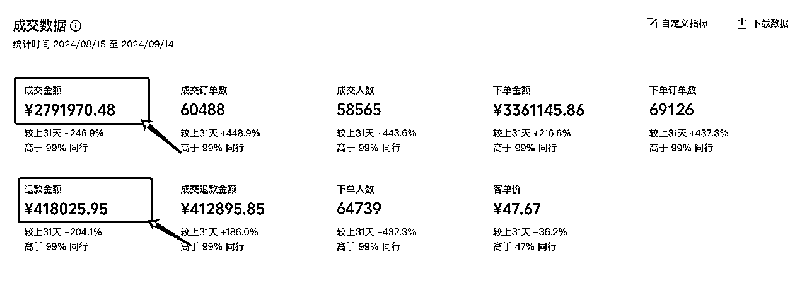
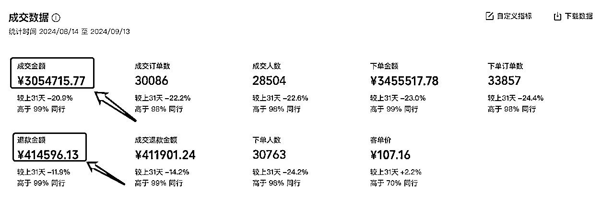
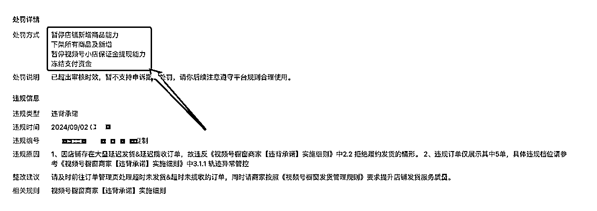
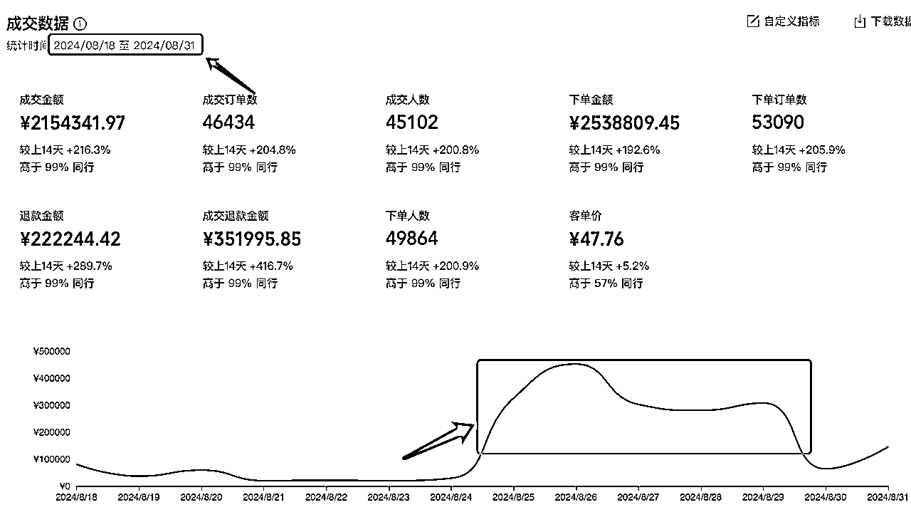
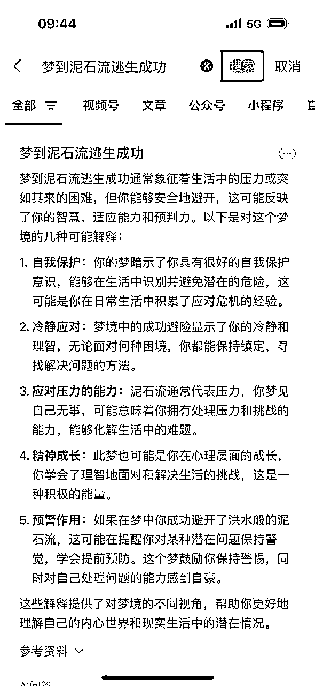
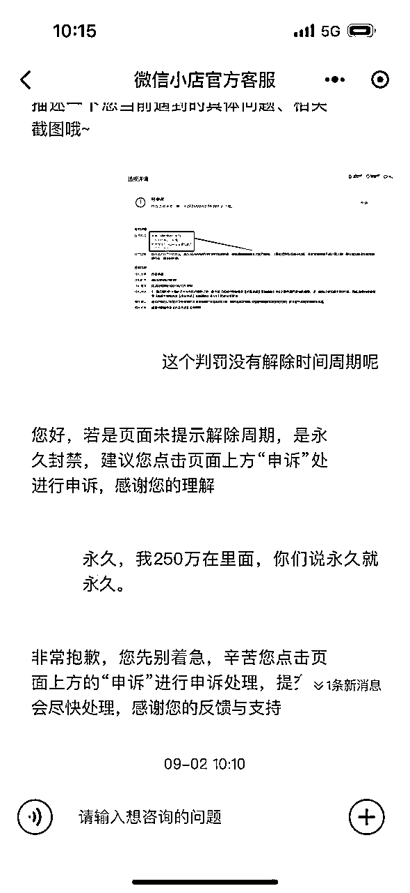
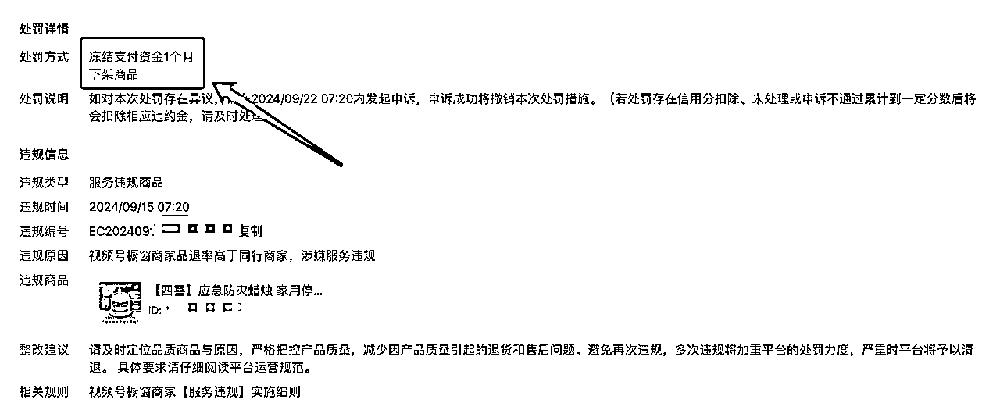
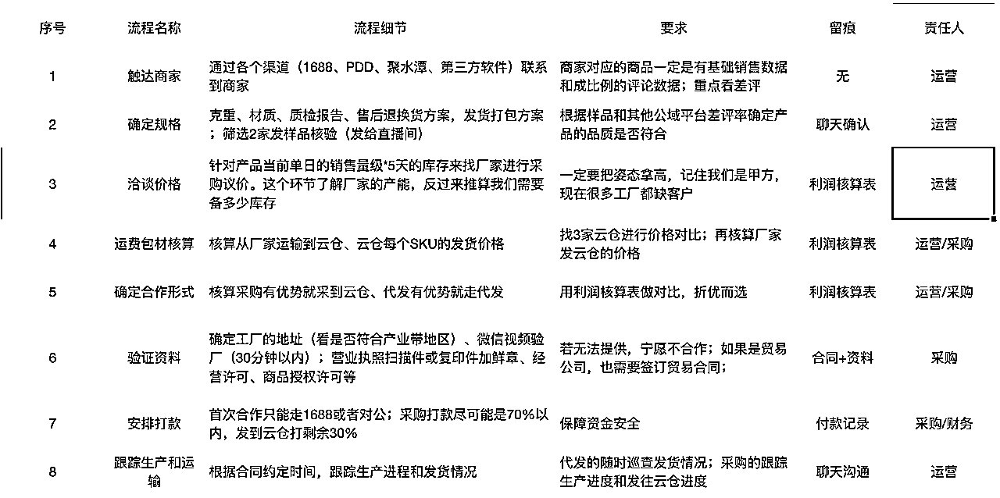
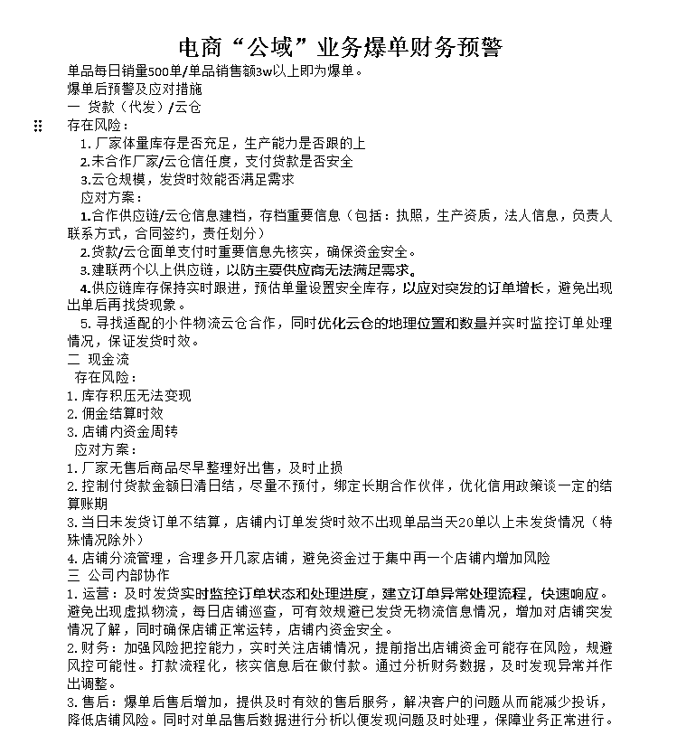

来源：https://kfeoftapye.feishu.cn/docx/I7dTd7AueoMFhjxVAxLckQuKnqb
好久不见，圈友们！
我是晋四喜，从事视频号电商3年，擅长视频号付费直播打品，熟悉视频号平台算法和最新直播玩法；
目前主要做视频号后端供应链和付费直播打品，微信豆月均消耗350w+，视频号月均GMV800+
近半年一直扎在业务里，但最近视频号规则更新太快，加之我踩的坑比较大，所以为了帮大家避坑所以抽时间写了一篇帖子。
我做微信小店5天卖了200万，却怒亏50万！不是标题党，真事！（响应亦仁的号召）
这不是一篇教学贴，而是一篇警告和避坑帖！做微信小店的圈友一定要引起注意。



上面三张图分别是：
图一和图二是过去一个月我微信小店店群中的两个店铺的各项数据，重点看成交金额和退款金额事项；
图三是店铺被处罚导致冻结250万现金流的处罚通知。
接下来我会把整个事情的原由一一道来，如果你也是做微信体系电商的伙伴，建议你花20分钟好好的看一下，一定要避坑！
为了方便大家能更好的理解后面的内容，先给大家介绍下我们在微信电商体系中的业务定位。
1、爆品电商后端。
主要给各大团长、团队和个人视频号带货的玩家提供供应链服务。包括代上架商品、线下结算分佣、直播打品合作等；我们的盈利方式主要是通过提供产品赚取利差。主营类目：图书、百货和食品滋补，月均GMV500+；
2、自营直播电商。
我们在视频号有自营的直播间，主要类目方向是生鲜食品，擅长微信豆付费投放打品。目前有3个日不落直播间，月均消耗350万，月均GMV800+。
按照GMV总量来说，我们算是视频号上的腰部以上玩家；按照我们从事视频号3年的经验，经历了这个视频号电商生态的所有阶段，应该算是视频号电商的OG了。但这次的打击如同晴天霹雳震耳欲聋，真的是微信电商对整个生态的正杀手锏，且听我细细道来。
这一波爆单是从8.25日开始的，本来一天能卖5-10万的店铺，突然30万、40万一天的滴滴滴！出订单的声音简直停不下来。这个品很多做视频号的圈友应该知道：应急蜡烛。

作为视频号电商的老玩家，这种爆单也经历了不少次，兴奋劲儿少了很多，倒是风险意识立马就来了。第一时间反应过来的是上游能不能正常发货。
还记得25号当天，我就问了运营主管3次以上：“厂家的产能咋样、能不能确保正常发货”。他给我的反馈都是：“没问题”。未来的几天我也一直在追踪这件事，虽然期间换了很多次厂家，但我收到的信息都是货一直正常的在发。
直到28号晚上说到没货了，联系到合作的厂家，他给运营主管的答复是：“这个货太紧俏了，全网畅销不一定有货，最快都得30号才有货到”。但运营主管因为销售额指标的诱惑，以及顾忌合作团长次日结算的问题，鬼使神差的让上游做预发货，也就是这个预发货埋下了种子。最后由于铁罐的确实没货了，咱们就开始换成玻璃罐的，这波流量才算慢慢下来，我以为这一波就这么过去了，还开始告诉团队伙伴，辛苦大家未来一周肯定需要在售后上面忙一阵了，殊不知噩梦才刚开始。
9月2日星期一，一大早我就被噩梦吓醒了。“梦里我被泥石流追着一路走，最后好不容易跑到一个高处才勉强的活下来”。但我也因此被吓醒了，我记得醒来后我立马查了一下周公解梦，看了答案总体是好的也就没那么在意。

早上到公司，刚坐下去20分钟不到，主管敲开我的办公室门，一句：“某某店铺被封，资金冻结了”，我直接么懵了。要知道做后端的最怕就是现金流出问题，一旦出问题业务基本就停滞。
一番排查下，初步确定是29号的订单预揽收没有物流痕迹更新导致的违规。随后我们联系到厂家，追问发货情况，他才告诉我们现在产品涨价厉害，之前的价格做不出来了，需要加价才能拿得到货了。听到这个答案我是气愤的，这不是趁火打劫吗？
加上我们问视频号小店的人工客服，我说为什么冻结没有时间限制呢？他说没有时间限制就是永封，这一刻我心里一紧，250万资金永封对公司的打击太沉重了。

接着通过人脉找到解封的渠道，他们给的答案是周四之前把订单都处理正常就可以申请解冻。这终于松了一口气~
紧接着这几天我们就在线上找货安排补发订单，眼看着到周四了，终于把29号的订单处理完了。第一时间我们就申请解除出发，给出的答复是还是有订单没有处理完成。
我心里犯嘀咕就让运营用猪猪快递云把所有应急蜡烛的订单全部回查一遍，结果不查不知道一查吓一跳。几万单的总订单量，物流轨迹正常的总共不超过5000单。相当于从25号开始，除了中途的一个合作厂家发货正常，其他两家全部都没发货！
没做线下T+1结算的商家可能不太清楚这意味着什么。
我卖了200万，线下次日结佣至少140万，产品成本30万，服务费运费险至少15万。如果全部没发货，就意味着我至少亏120万！真要是这样，这次爆单简直一场灾难。
联系到第一家供货商，给的答复是我们付款后的第二天产品成本涨价了，他心想着等产品降下来再发货，说实话这里用”畜生“两字都不为过吧！
联系到另外一家供货商，也就是给我们处理29号订单的那家，他自己都不知道26-27号的订单有问题。反复逼问下他才说这批订单他没有走他们公司，外包出去的。我只想说真的狗~
处理这件事的DDL是周一，我给两家供应电话沟通了3个小时，都给我说没问题，但现在已经是狼来了，加之每天亏损3万+的压力，压根不敢相信了。周五下午就赶到义乌，找到两家供货商，让他们带我去厂里，确认真实的生产进度，确保周一之前能完成发货。
就这样到了周一订单也属实解决了。我们立马提起申诉，但官方的结论依然是有订单不正常。我们就把店铺80000多个订单全部排查了一遍，才发现还有1个月以上的丢包和异常物流订单，在周三处理完后才终于解封。
提现了80多万，这一刻才算是真的松了一口气！
你以为到这就完了，不。昨天那个店铺又因为品退严重原因被冻结30天，这里就不展开了！

周四让财务算了下账，应急蜡烛这个品来回加上所有费用，我们将近亏了50万。说实话我心里是有预期的，但是事情真的成为现实摆在眼前，内心还是久久不能平复，这个教训真的太痛了，这应该是我电商生涯最大的教训。
当然痛定思痛，业务还得继续前进，尽快把损失挣回来才是当下应该做的事。因此我们整个团队做了5个小时的深度复盘，避免再发生类似的事件，总结下来以下重点信息，希望能帮到其他同行圈友。
做店铺端一定要对产品做好品控，品质差的产品尽量别碰。
爆品及时采集样品和采集商品其他平台的差评数据，如果因为品质差评较多的产品直接不做。
除了直营的直播产品，其他的基本上都是代发或者代采到云仓，这种方法很容易把握不到云仓。
爆品跑单一定要把握好商家的库存和产能。
确认库存最好的办法是微信开视频验厂，采购到自己云仓发货的签订购销合同，让厂家代发的记得签一件代发合同。
如果是走采购流程记得控制好采购数量，毕竟兴趣电商的周期短，控制到3-5天的销量即可。
在跑的过程中随时跟进销售数据，根据实时销售数据趋势安排厂家生产和库存。
说实话，出现问题时我们第一周期没有足够重视问题，把解决问题寄托于第三方，这是很蠢的做法。
下面这张图是我刚整理的对接厂家流程，需要的自取。

一定要有数据意识，并且随时关注平台规则变化。
视频号平台的规则很多都会在原规则上面进行更新，不会放到最新公告的地方，所以我们需要每周抽1-2个小时关注最新公告，去年年底我踩的坑也是因为公告关注不及时导致的“服务违规”。下面这个链接可以存一个，视频号橱窗细则https://docs.qq.com/doc/DTnVBdlZYRFJKTXJi
商家就关注2.8商家违规管理，达人就关注3.2管理规则，根据规则来调整运营动作。
至于数据意识里面最重要的是监控DSR的三个核心指标，以及【服务违规】、【违背承诺】、【虚假交易】、【骚扰他人】因为这四个规则都会导致店铺资金被冻结。
这里是我整理的重大违规项，划重点，大家可以点开链接自行查看。
我们现在自行开发了一个跟踪店铺物流的软件，可以实现每日监控所有店铺订单的物流状态，抄送异常指标订单给指定工作人员，再也不用担心发货中的问题了。也正在和开发人员沟通监控店铺产品品退数据的功能，确保更好的做好店铺管理。
这里分为两个维度，一个是经营品类，一个是合作设限。
a，经营品类不要太过混杂了，专注3个以内的品类，才能确保供应链不会掉链子，在价格和品质上拿到竞争优势。也不会让运营天天为了找到优势的产品焦头烂额。
b，合作设限主要是因为近期公域业务量激增，导致团队的服务能力严重透支，变相服务水平也降低了。我们做的调整是未来一个周期内只对接团队和团长，不对接个人玩家。
这里不是瞧不上个人玩家，因为团队精力有限，肯定需要把精力放在产值更高的地方去才更符合商业逻辑。
因为这次我去义乌商贸城也明显感受到，那些商家看你现在不需要采购或者是散客，基本不会理会你，因为他的时间有限，和你聊半天哪怕你买个几千万把块他最多也就整个小几千，聊个大客户几十上百万的再怎么也得有几万的利润。
再则平台既然有团长这个角色，就是撮合的作用，各司其职效率最高
一个公司在高速发展中，需要业务和财务中都设立预警机制才能稳步着陆。
比如你出现了爆单需要哪些方面的信息确认；出现了订单问题，需要怎么对接上游处理，需要运营怎样去快速处理才能将损失降到最低；出现了冻结，应该怎么去进行业务调整和找到预备的现金流等等。
下面是我们做的一个财务预警方案，仅供参考，欢迎交流。

近期官方的种种动作，都证明着平台对商家的服务和产品的品质会长期收紧，倒逼商家不敢上架品退高的产品，也不敢不把服务做好。一旦巡查到基本上反手就是一个冻结，大部分商家是应对不了的。据我了解，圈子里冻结店铺的还大有所在，最多的冻结了20多家。
关于达人方向，既然商家都不敢上架品质差的产品，意味着很多韭菜产品就无法继续带货了。倒逼着达人去卖品质更好，服务更佳的商家的产品。这才能维持微信电商生态的可持续发展，也符合平台的发展策略。
总结一句话：好好做内容，好好做产品，好好做服务，和平台共进退。
发生这种事故，不仅要在事情本身上面反思，还得反推到生活工作中去内观，才能溯源到根本。以下是我的一些个人感悟。
1、人情世故和合同规章一个都不能少。
中国是一个充满人情世故的社会。以前我一直觉得线上和上游建联即可保障业务能正常的推进，但事实并非如此，线上见过面，吃个饭喝个酒洗个脚还是很有必要的，有人情的纠葛，会让你的合作方考虑更多。
合同规章是底线保障。该走合同的地方一定不能少合同，虽然现在社会老赖也很多，但至少出了事情还有一定的概率能挽回损失。这两个都是生意保驾护航的重要因素。
2、给合作对象合理的利润，他才能真心为你服务。
合作的基本条件是共赢，你要给到对方合理的利润，他才愿意真心为你。其实我们这次是给了合作方足够的利润的，但他们就不是一个合格的合作方。但我回过头来看其他的业务合作满足这个条件的合作关系都挺好。
回想那些年我开手机店的时候，如果一个顾客让我挣了足够的钱，下次来时候业务员肯定是无微不至的，这就是人性。
包括这次我们的一些合作的团队，我们也进行了沟通：利润明确化，沟通透明化，能接受的就深度配合。
3、商场如战场，不要忽略人性去相信人。
这次去义乌和圈子里的朋友聊了一下他在义乌遇到的坑，深切的感受到了什么叫商场。
找厂家采购，很有可能他会因为别人每单多给1毛钱，就把订单给别人；我们找厂家，很有可能因为原材料涨价了，他根本不给你发，妄想等着降价在出货，硬生生的搞成了期货；义乌大大小小的贸易商，很多都是一个小作坊，甚至连作坊都没有，仅是个1688的店主，他为了拿下你的订单，可以找到厂家骗你视频验厂；你需要他给你各项资质他有可能都是P给你的。
人为财死鸟为食亡，在商场上一定要多留一个心眼。
4、创业途中，任何时候都不要懒政
在过去的1年里，我在公司的角色多以掌舵的角色存在，加上精力还要放在支付业务的发展中，电商这边就很少直接参与到实操中去。这也就导致了业务的体感差了，警惕性也降低了。这次的发货，主管说没问题了我也就没多过问了，总觉得他们应该都没问题。这算是信任，但也算是懒政！
面对损失不大的事，可以让给员工犯错的空间；但是面临大问题时，一定要亲自下场把控风险；水能载舟亦能覆舟，不要一朝回到解放前，那就玩完！
5、兵马未动粮草先行，提前布局更稳定
人员的配置一定要先于业务，尽量不要出现在岗人员工作过载，业务混乱造成的损失可能远大于多几个人的薪资损失。日常的人力储备，是为了构建盈余，确实想降低成本也得在感觉业务有快速增量的苗头，尽快的做多1-2个人的人力储备。当然合同签好，如果实习期到了之前业务增量和储备的人能力不足，也可以及时止损。
《贫穷的本质》一书里面提到的圣约翰医疗中心，因为手术一直排的满满当当，没有闲余的手术室，导致事故频发，口碑急剧下滑，医院内外部都面临崩盘。然而他们只做了一个调整就完美的改变了现状。——留一间手术室待用。
这就是构建闲余的重要性，公司的业务依然如此。
尼采说：那些杀不死我的，终将使我更强大。
作为12年的持续创业者我深知创业不易，也一直知道在路途中我们会遇到各种意想不到的问题，有些困难也许能轻松应对，有些困难也许会让我脱一层皮。但每一次战胜了困难，团队的反脆弱能力又能更上一层楼，才能走向更高的远山。
致敬所有创业者，路漫漫其修远兮，吾将上下而求索，希望大家早日达到自己的理想之城。